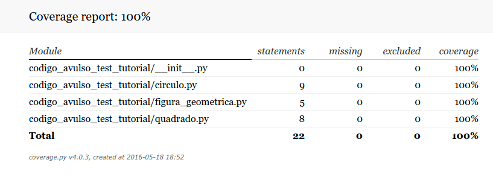
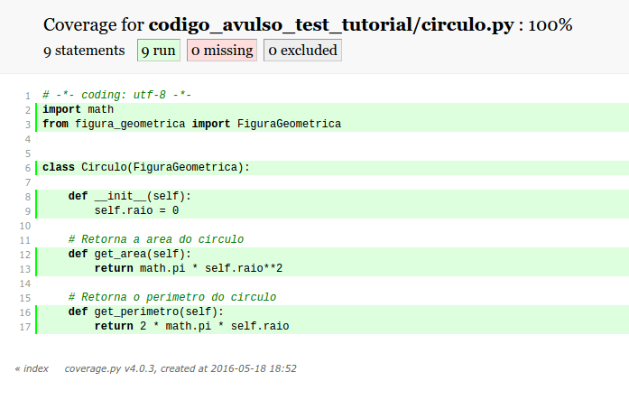
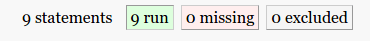

Na terceira parte do tutorial sobre unittest, vimos como utilizar o serviço Coveralls para gerar relatórios sobre o testes do nosso projeto. Entretanto, uma "desvantagem" do serviço é que o processo de análise é iniciado apenas quando executarmos um push ou um pull request. Sendo assim, não seria interessante termos a liberdade de executar esses testes localmente?
Felizmente, os desenvolvedores do Coveralls pensaram nisso e criaram um conjunto de comandos que nos permite executá-lo pelo terminal.
Instalação
Então, antes de iniciarmos, vamos a instalação do módulo, que pode ser feito pelo comando a seguir:
pip install coveralls
Quando você instala o módulo, um script de linha de comando chamado coverage é adicionado ao diretório de scripts python no seu sistema. Para suportar diferentes versões do Python, o módulo vem com um conjunto de scripts. Então, para a versão 2.7 do Python, você pode utilizar o comando coverage ou coverage2. Para a versão 3, utilize coverage3.
Gerando relatórios
O comando usado para obtermos um relatório sobre os testes do nosso projeto é simples. No diretório do projeto, basta executar:
coverage run --source=nomedopacote setup.py test
o comando run irá coletar dados sobre nosso código fonte. No nosso caso, usaremos o repositorio que criamos para o tutorial anterior: codigo-avulso-test-tutorial. Assim, o comando seria:
coverage run --source=codigo_avulso_test_tutorial setup.py test
Se você executar o comando ls -la no terminal, verá que um arquivo chamando .coverage foi criado. Esse arquivo contém algumas informações sobre o seu código. Vale alertar que para gerar os relatórios precisamos, obrigatoriamente, executar o comando acima, quando formos gerar o relatórios pela primeira vez ou quando o código sofrer alguma modificação.
Uma vez que o arquivo .coverage foi gerado, execute o seguinte comando:
coverage report
Um relatório com a porcentagem de cobertura de testes (entre outras informações) de cada arquivo de código fonte será exibido no terminal.
Name Stmts Miss Cover
----------------------------------------------------------------------
codigo_avulso_test_tutorial/__init__.py 0 0 100%
codigo_avulso_test_tutorial/circulo.py 9 0 100%
codigo_avulso_test_tutorial/figura_geometrica.py 5 0 100%
codigo_avulso_test_tutorial/quadrado.py 8 0 100%
----------------------------------------------------------------------
TOTAL 22 0 100%
As colunas exibidas no relatório possuem informações interessantes. São elas:
- Stmts: indica o total de trechos do código que, segundo o Coveralls, devem ser testados.
- Miss: coluna que indica quantos trechos do código ainda não estão sob testes.
- Cover: talvez a coluna mais importante, ela indica a porcentagem de cobertura de testes do arquivo fonte.
Em TOTAL temos a cobertura total de testes do nosso projeto. Nesse projeto em especial, temos 100% porque o mesmo possui pouco código e os códigos existentes são simples de testar. Entretanto, em projeto mais complexos, nem sempre é possível chegar nessa porcentagem, então vale a pena se focar em escrever testes para as partes mais críticas do seu código e conseguir uma porcentagem perto dos 80%, considerado pelo Coveralls como satisfatório.
Gerando relatório em HTML
Uma opção interessante é gerar o relatório em formato html com o comando:
coverage html
Um diretório chamado htmlcov será criado no diretório do projeto. Dentro desse diretório existe um arquivo de nome index.html, que pode ser aberto no navegador.
Para o Google Chrome, usamos:
google-chrome htmlcov/index.html
ou com o Firefox
firefox htmlcov/index.html
Abaixo temos o index.html aberto. Nele podemos ver a lista dos arquivos que estão cobertos pelo Coveralls.

Vamos analisar os dados do arquivo circulo.py. Assim, temos as seguintes colunas:
statements: indica o total de trechos do código que, segundo o Coveralls, devem ser testadas. No caso do arquivocirculo.py, o valor da coluna é 9, indicando que existem 9 trechos do código quem devem estar sob teste.missing: coluna que indica quantos trechos do código ainda não estão sob testes.excluded: coluna que indica quantos trechos do código foram ignorados pelo Coveralls. Algumas vezes pode ser necessário excluir alguns trechos de código do relatório devido ao tipo de código nele contido ou porque você simplesmente não deseja que aquele trecho seja incluido no relatorio. Isso é feito através de um arquivo de configuração, visto mais adiante.coverage: indica a porcentagem de cobertura de testes do nosso código.
Na imagem abaixo, logo após clicarmos em codigo_avulso_test_tutorial/circulo.py, podemos ver os pontos do código que devem ser testados.

Ao clicarmos nos três botões no cabeçalho da página:

A página irá destacar, respectivamente, os trechos cobertos por testes, trechos sem testes ou que foram excluídos do Coveralls.
Gerando relatório em XML
Os relatórios em XML podem ser facilmente gerados por:
coverage xml
Um arquivo chamado coverage.xml será criado.
Criando o arquivo coveragerc
O arquivo .coveragesrc é usado para determinar parâmetros de funcionamento do comando coverage. Nele podemos incluir e excluir aquivos da analise do Coveralls entre outras configurações. Abaixo temos um exemplo de arquivo de configuração.
[run]
source = codigo_avulso_test_tutorial
omit =
codigo_avulso_test_tutorial/__init__.py
codigo_avulso_test_tutorial/main.py
Na configuração acima, vamos omitir da análise o arquivo __init__.py e um arquivo main.py. Indicamos o source que é onde o Coveralls deve executar a análise.
O arquivo de configuração ainda pode receber várias informações. Você pode ver mais delas aqui.
Conclusão
Neste tutorial vimos um pouco mais sobre o Coveralls. Evitei colocar as informações deste tutorial nos tutoriais anteriores a fim de simplificá-los. Você pode aprender mais sobre o módulo consultando sua documentação aqui.
É isso pessoal, obrigado pela leitura e até o próximo tutorial.